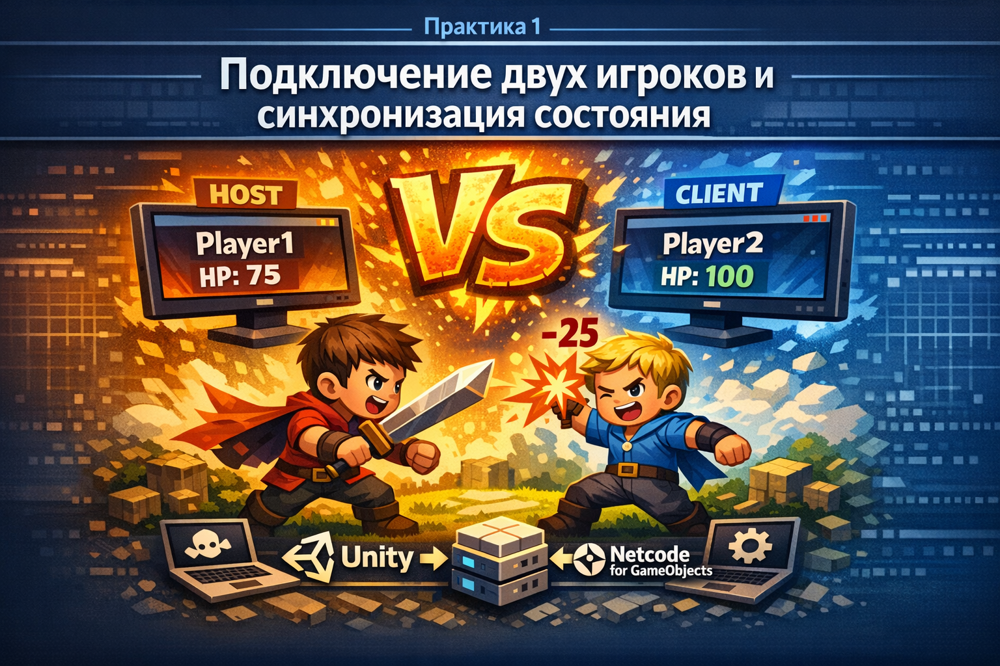

Уважаемый студент! Если что-то не работает или вы что-то не знаете, сначала проверьте документацию Unity NGO, настройки NetworkManager и консоль Unity. Не пытайтесь обходить серверную логику прямым изменением состояния на клиенте.
Практика 1. Подключение двух игроков и синхронизация состояния

Цель
Собрать первую multiplayer-сцену на Unity NGO, которая умеет:
- запускаться как
Hostи какClient; - подключать два окна игры друг к другу;
- синхронизировать никнейм игрока через
NetworkVariable; - синхронизировать здоровье игрока через
NetworkVariable; - наносить урон другому игроку только через сервер.
Ожидаемый результат
После выполнения практики:
- в проекте есть стартовое меню с кнопками
HostиClient; - два экземпляра игры успешно соединяются;
- у каждого игрока отображаются
NicknameиHP; - один игрок может нанести урон другому;
- после атаки здоровье цели одинаково меняется у всех участников сессии.
Подготовка сцены
- Создайте отдельную сцену для практики, например
MainScene. - Установите пакеты
Netcode for GameObjectsиUnity Transport. - Добавьте на сцену объект
NetworkManager. - Настройте транспорт внутри
NetworkManager. - Создайте Canvas для стартового меню.
- Подготовьте сетевой префаб игрока и добавьте на него
NetworkObject. - Назначьте этот префаб в поле
Player PrefabуNetworkManager.
Проверь
До начала основной логики в сцене уже должны существовать: NetworkManager, UI-меню и сетевой префаб игрока.
Этап 1. Подключение Host/Client
На этом этапе нужно получить первый стабильный коннект между двумя окнами игры.
- Сделайте кнопки
HostиClient. - Создайте отдельный скрипт запуска сетевой сессии, например
ConnectionUI. - Подключите кнопки к соответствующему запуску режима хоста и клиента.
- Запустите два окна игры и проверьте, что клиент подключается к хосту без ошибок.
Подсказка: каркас скрипта подключения
Этот скрипт можно повесить на объект Canvas. Он показывает минимальную структуру для запуска сессии и хранения ника, который потом понадобится сетевому игроку.
using TMPro;
using Unity.Netcode;
using UnityEngine;
public class ConnectionUI : MonoBehaviour
{
[SerializeField] private TMP_InputField _nicknameInput;
// Сохраняем ник локально до появления сетевого объекта игрока.
public static string PlayerNickname { get; private set; } = "Player";
public void StartAsHost()
{
SaveNickname();
// Хост одновременно является сервером и клиентом.
NetworkManager.Singleton.StartHost();
}
public void StartAsClient()
{
SaveNickname();
// Клиент только подключается к уже запущенному хосту/серверу.
NetworkManager.Singleton.StartClient();
}
private void SaveNickname()
{
// Нормализуем ввод, чтобы сервер не получил пустую строку.
string rawValue = _nicknameInput != null ? _nicknameInput.text : string.Empty;
PlayerNickname = string.IsNullOrWhiteSpace(rawValue) ? "Player" : rawValue.Trim();
}
}Проверь
После запуска одного окна как Host и второго как Client на сцене должны появляться оба игрока.
Этап 2. Сетевые статы игрока
Теперь игрок должен получить сетевой профиль, который синхронизируется у всех клиентов.
- Добавьте в сетевой скрипт игрока переменную для
Nickname. - Добавьте переменную для
HPсо стартовым значением, например100. - Настройте права так, чтобы изменять здоровье мог только сервер.
- После подключения игрок должен передать серверу имя из UI.
- Если имя не введено, сервер должен назначить корректное имя по умолчанию.
Важно
Ник и здоровье должны храниться именно как сетевое состояние. Клиент не должен поддерживать свою отдельную “истину” для этих данных.
Подсказка: каркас сетевых переменных игрока
Ниже дан безопасный стартовый шаблон. Здесь уже заданы правильные права на чтение и запись, но инициализацию и дальнейшую логику студент должен встроить сам.
using Unity.Collections;
using Unity.Netcode;
using UnityEngine;
public class PlayerNetwork : NetworkBehaviour
{
// Ник должен быть виден всем клиентам, но менять его может только сервер.
public NetworkVariable<FixedString32Bytes> Nickname = new(
default,
NetworkVariableReadPermission.Everyone,
NetworkVariableWritePermission.Server
);
// HP тоже читает каждый клиент, но изменяется только на сервере.
public NetworkVariable<int> HP = new(
100,
NetworkVariableReadPermission.Everyone,
NetworkVariableWritePermission.Server
);
public override void OnNetworkSpawn()
{
if (IsOwner)
{
// Только владелец отправляет на сервер свой локально введенный ник.
SubmitNicknameServerRpc(ConnectionUI.PlayerNickname);
}
}
[ServerRpc(RequireOwnership = false)]
private void SubmitNicknameServerRpc(string nickname)
{
// Сервер нормализует ник и записывает итоговое значение в NetworkVariable.
string safeValue = string.IsNullOrWhiteSpace(nickname) ? $"Player_{OwnerClientId}" : nickname.Trim();
Nickname.Value = safeValue;
}
}Этап 3. Отображение ника и здоровья
Сделайте привязку UI к сетевому состоянию игрока.
- Выведите
Nicknameнад головой игрока или рядом с ним. - Выведите текущее значение
HP. - Обновляйте UI по изменению сетевых значений, а не через постоянный опрос в
Update(). - Подписку и отписку на изменение данных размещайте в корректных сетевых методах жизненного цикла.
Подсказка: обновление UI через OnValueChanged
Здесь главное не сам текст, а принцип: подписка в OnNetworkSpawn, отписка в OnNetworkDespawn, первичное обновление UI вручную сразу после подписки.
using TMPro;
using Unity.Netcode;
using UnityEngine;
public class PlayerView : NetworkBehaviour
{
[SerializeField] private PlayerNetwork _playerNetwork;
[SerializeField] private TMP_Text _nicknameText;
[SerializeField] private TMP_Text _hpText;
public override void OnNetworkSpawn()
{
// Подписываемся на изменения только после сетевого спавна объекта.
_playerNetwork.Nickname.OnValueChanged += OnNicknameChanged;
_playerNetwork.HP.OnValueChanged += OnHpChanged;
// Сразу рисуем текущее состояние, чтобы UI не ждал первого сетевого события.
OnNicknameChanged(default, _playerNetwork.Nickname.Value);
OnHpChanged(0, _playerNetwork.HP.Value);
}
public override void OnNetworkDespawn()
{
// Отписка обязательна, чтобы не оставлять "висячие" обработчики.
_playerNetwork.Nickname.OnValueChanged -= OnNicknameChanged;
_playerNetwork.HP.OnValueChanged -= OnHpChanged;
}
private void OnNicknameChanged(FixedString32Bytes oldValue, FixedString32Bytes newValue)
{
_nicknameText.text = newValue.ToString();
}
private void OnHpChanged(int oldValue, int newValue)
{
_hpText.text = $"HP: {newValue}";
}
}Проверь
Если сервер меняет HP или ник игрока, оба окна должны увидеть новое значение без ручной синхронизации каждый кадр.
Этап 4. Нанесение урона другому игроку
Реализуйте простую боевую механику, где один игрок может уменьшить здоровье другого.
- Добавьте кнопку или клавишу атаки.
- При атаке локальный игрок должен отправлять запрос на сервер.
- Сервер должен определить цель и применить к ней урон.
- После изменения
HPновое значение должно автоматически прийти всем клиентам черезNetworkVariable. - Здоровье не должно уходить ниже
0. - Игрок не должен иметь возможность атаковать самого себя.
Подсказка: серверный урон через ServerRpc
Этот шаблон показывает только правильное направление потока данных: клиент вызывает RPC, сервер валидирует цель и меняет HP. Логику поиска цели студент может реализовать отдельно.
using Unity.Netcode;
using UnityEngine;
public class PlayerCombat : NetworkBehaviour
{
[SerializeField] private PlayerNetwork _playerNetwork;
[SerializeField] private int _damage = 10;
public void TryAttack(PlayerNetwork target)
{
// Атаку инициирует только локальный владелец объекта.
if (!IsOwner || target == null)
return;
DealDamageServerRpc(target.NetworkObjectId, _damage);
}
[ServerRpc]
private void DealDamageServerRpc(ulong targetObjectId, int damage)
{
// Сервер проверяет, существует ли цель среди заспавненных сетевых объектов.
if (!NetworkManager.SpawnManager.SpawnedObjects.TryGetValue(targetObjectId, out NetworkObject targetObject))
return;
PlayerNetwork targetPlayer = targetObject.GetComponent<PlayerNetwork>();
// Запрещаем урон самому себе и удары по некорректной цели.
if (targetPlayer == null || targetPlayer == _playerNetwork)
return;
// Итоговое значение HP ограничиваем снизу нулем.
int nextHp = Mathf.Max(0, targetPlayer.HP.Value - damage);
targetPlayer.HP.Value = nextHp;
}
}Что нужно реализовать самостоятельно
- связь поля ввода ника с сетевым объектом игрока после подключения;
- передачу ника на сервер и запись этого значения в сетевую переменную;
- подписку на обновление
NetworkVariableи обновление UI; - серверный метод применения урона;
- защиту от удара по самому себе;
- ограничение здоровья снизу до
0.
Требования к сдаче
- Продемонстрировать запуск одного окна как
Hostи второго какClient. - Показать, что оба игрока появляются на сцене.
- Показать отображение
NicknameиHPу обоих игроков. - Показать нанесение урона другому игроку.
- Показать, что значение здоровья одинаково на обоих клиентах после атаки.
- Предоставить видео работы приложения, где видно запуск сцены, подключение и нанесение урона.
- Предоставить ссылку на Git-репозиторий проекта.